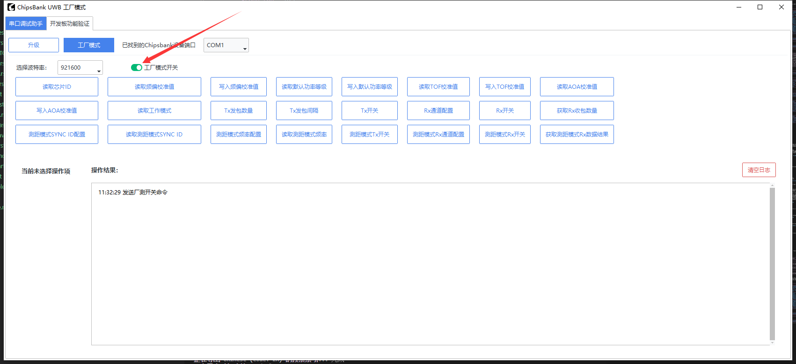
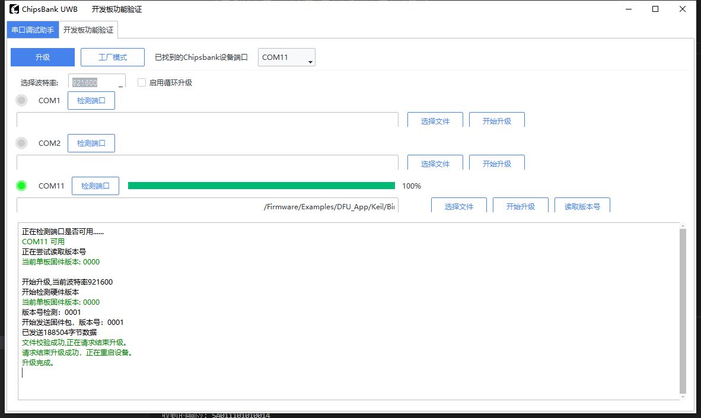

APP-RNGAOA-FTM-DFU
概述
本文档提供了 uwb_rngaoa_ftm_dfu 示例的使用指南。该示例是一个集测距测角、产测标定与固件升级于一体的综合例程，主要用于配合上位机产测工具在量产阶段对开发板进行校准与烧录。它包含三个功能模块：
RNGAOA（测距 + 测角）：在发起者与响应者之间进行双面双向测距（DS-TWR）和到达角（AoA/PDoA）测量，是设备上电后的默认运行任务。
FTM（产测模式）：通过 UART 命令帧接收上位机下发的产测标定指令，读写频偏、功率码、飞行时间（ToF）、AoA 等校准参数至非易失存储（NVM）。
DFU（固件升级）：通过 UART 通道接收上位机推送的固件，实现设备固件在线更新。
设备上电后默认执行 RNGAOA 测距测角任务，同时在主循环中持续轮询 UART，将收到的命令分别分发给 DFU 与 FTM 处理器。当上位机下发进入产测模式的命令后，测距任务会被挂起，转而执行标定流程；退出产测模式后恢复测距。
要求
- 需要以下开发板中的两个：
CB5000V210 Anchor开发板（一个作为发起者，一个作为响应者）
- 软件：
ChipsBank UWB 上位机工具（ChipsBankUWBTool），用于产测标定与固件升级
串行终端工具（例如 PuTTY、SSCOM），用于观察测距测角日志
用户界面
在每个开发板上找到 GPIO00 引脚，并将其连接到串行接收线（RX）。
在每个开发板上找到 GPIO01 引脚，并将其连接到串行发送线（TX）。
UART0 波特率 115200，停止位 1，数据位顺序 LSB，无奇偶校验。UART0 承载测距日志。
在每个开发板上找到 GPIO07 引脚，并将其连接到串行接收线（RX）。
在每个开发板上找到 GPIO06 引脚，并将其连接到串行发送线（TX）。
UART1 波特率 921600，UART1 承载产测命令与固件升级数据。
确保连接牢固，以避免通信问题。
构建和运行
- 该示例可以在ChipsBank Connect SDK文件夹结构中的以下位置找到：
Firmware\\Examples\\uwb_rngaoa_ftm_dfu
进入上述目录的
Keil文件夹，双击工作区文件uwb_rngaoa_ftm_dfu.uvmpw，即可使用 Keil MDK 打开工程。设备角色由
App\AppUwbRngAoa.h中的编译宏APP_RNGAOA_ROLE决定：设为INITIATOR编译为发起者固件，设为RESPONDER编译为响应者固件。将一块开发板烧录为发起者固件，另一块烧录为响应者固件。该示例配合 DFU 引导（Bootloader）使用，编译产物为
CBU5000V210_APP.bin，可通过 Keil 直接烧录，也可通过上位机 DFU 功能进行升级。
预期输出
正常测距测角时（未进入产测模式），发起者串行终端将输出每个周期的距离、相位差与角度信息（数值随实际摆放而变化）：
uwb_rngaoa_ftm_dfu INITIATOR
Cycle:0, D:25.132500cm,PD01:12.500000, PD02:-8.300000, PD12:-20.700000 (in degrees),azimuth: 15.200000 degrees,elevation: -3.400000 degrees
Cycle:1, D:24.981200cm,PD01:12.700000, PD02:-8.100000, PD12:-20.900000 (in degrees),azimuth: 15.400000 degrees,elevation: -3.100000 degrees
Cycle:2, D:25.007800cm,PD01:12.600000, PD02:-8.200000, PD12:-20.800000 (in degrees),azimuth: 15.300000 degrees,elevation: -3.300000 degrees
uwb_rngaoa_ftm_dfu RESPONDER
Cycle:0, Ranging Successful:1,PD01:12.500000, PD02:-8.300000, PD12:-20.700000 (in degrees),azimuth: 15.200000 degrees,elevation: -3.400000 degrees
Cycle:1, Ranging Successful:1,PD01:12.700000, PD02:-8.100000, PD12:-20.900000 (in degrees),azimuth: 15.400000 degrees,elevation: -3.100000 degrees
上位机工具介绍
ChipsBank UWB 上位机工具主界面采用标签页组织，与本示例配合使用的主要是以下两个标签页：
串口调试助手：通用串口收发与日志分析界面，可选择 COM 端口与波特率，实时显示开发板输出的测距测角日志，并支持将日志解析为图表。
- 开发板功能验证：芯片功能测试界面，工具会自动查找已插入的 Chipsbank 设备。该页面顶部有两个功能按钮：
升级：固件升级（DFU）面板。
工厂模式：产测标定（FTM）面板。
工厂模式操作界面
选择“工厂模式”，设置设备对应的串口和波特率并打开工厂产测开关；日志区出现“工厂模式已开启”表示进入产测模式成功。
{kind=link}

固件升级操作界面
选择“升级”，设置波特率并检测目标串口，确认当前固件版本后选择待升级的 APP bin 文件，点击“开始升级”，日志区会依次显示升级过程和完成结果。
{kind=link}

命令帧协议
产测标定命令采用固定格式的二进制帧，通过 UART 与设备交互。帧结构如下：
+-----------+--------+--------+--------+--------+---------+----------+
| StartCode | Cmd_H | Cmd_L | Resp | Length | Data... | Checksum |
+-----------+--------+--------+--------+--------+---------+----------+
1B 1B 1B 1B 1B N Byte 1B
StartCode：起始字节，固定为 0x9B。
Cmd_H / Cmd_L：16 位命令 ID 的高/低字节（例如 0x0001 读芯片 ID、0x0010 读频偏、0x7525 产测模式开关）。
Resp：响应标志位。
Length：其后 Data 字段的字节数。
Checksum：从 Cmd_H 起到 Data 末尾所有字节按字节求和后取低 8 位。
产测命令列表
以下命令统一称为产测命令。
命令 ID |
处理函数 |
功能说明 |
|---|---|---|
0x7525 |
ftm_on_0ff |
开启或关闭工厂模式 |
0x0001 |
ftm_read_chip_id |
读取芯片 ID |
0x00F5 |
APP_User_PreambleScanSet |
Preamble 扫描。数据段 3 字节：第 1 字节为开关（非 0 启动扫描、0 为停止），第 2~3 字节为扫描时长（大端，单位 ms）。扫描完成后返回 1 字节最优 preamble 码索引；若返回值不为 0xFF（即扫描成功），设备**会自动复位**以使新配置生效。 |
0x00F6 |
APP_User_PreambleSet |
写 preamble 码。数据段 1 字节为 preamble 码索引，写入 NVM。返回 1 字节状态码；写入成功后设备**会自动复位**以使新配置生效。 |
0x00F7 |
APP_User_PreambleGet |
读 preamble 码。从 NVM 读取当前 preamble 码索引并返回 1 字节；若 NVM 中无有效数据则返回 0xFF。该命令不会触发复位。 |
0x00F0 |
ftm_preamble_scan |
扫描最优 Preamble 码，不触发自动复位 |
0x00F1 |
ftm_preamble_set |
将 Preamble 校准值写入 NVM |
0x00F2 |
ftm_preamble_get |
从 NVM 读取 Preamble 校准值 |
0x00F3 |
ftm_device_role_set |
将设备角色写入 NVM |
0x00F4 |
ftm_device_role_get |
从 NVM 读取设备角色 |
0x0010 |
ftm_read_freq_offset_cal |
读取频偏校准值 |
0x0011 |
ftm_write_freq_offset_cal |
写入频偏校准值 |
0x0012 |
ftm_read_power_code |
读取发射功率码 |
0x0013 |
ftm_write_power_code |
写入发射功率码 |
0x0014 |
ftm_read_tof_cal |
读取 ToF 校准值 |
0x0015 |
ftm_write_tof_cal |
写入 ToF 校准值 |
0x0016 |
ftm_read_num_of_aoa |
读取 AoA 校准项数量 |
0x0017 |
ftm_read_aoa_cal |
读取指定索引的 AoA 校准值 |
0x0018 |
ftm_write_aoa_cal |
写入指定索引的 AoA 校准值 |
0x0030 |
ftm_set_tx_num_of_packet |
设置校准发射包数量 |
0x0031 |
ftm_set_tx_interval |
设置校准发射包间隔 |
0x0032 |
ftm_set_tx_on_off |
开启或停止周期性 UWB 发射 |
0x0040 |
ftm_set_rx_channel |
设置校准接收通道 |
0x0041 |
ftm_set_rx_on_off |
开启或停止校准接收 |
0x0042 |
ftm_read_rx_num_of_packs |
读取校准期间的接收包数量 |
0x0051 |
ftm_read_rang_aoa_id |
读取测距测角同步 ID |
0x0050 |
ftm_write_rang_aoa_id |
写入测距测角同步 ID |
0x0053 |
ftm_read_rang_aoa_freq |
读取测距测角工作频率 |
0x0052 |
ftm_write_rang_aoa_freq |
写入测距测角工作频率 |
0x0060 |
ftm_set_rang_aoa_tx_on_off |
开启或关闭测距测角发射 |
0x0070 |
ftm_set_rang_aoa_rx_channel |
设置测距测角接收通道 |
0x0071 |
ftm_set_rang_aoa_rx_on_off |
开启或关闭测距测角接收 |
0x0072 |
ftm_get_rang_aoa_rx_result |
读取测距测角接收结果 |
0x0073 |
ftm_set_ranging_tx_on_off |
测距发射端开关。数据段 1 字节，非 0 为开启、0 为关闭。开启后设备以发起者身份按当前测距频率周期性发起测距。 |
0x0074 |
ftm_set_ranging_rx_on_off |
测距接收端开关。数据段 1 字节，非 0 为开启、0 为关闭。开启后设备以响应者身份应答测距。 |
0x0075 |
ftm_write_ranging_freq |
写测距频率。数据段 1 字节，单位 Hz，支持 10、20、50（同时兼容 0x10、0x20、0x50 写法），分别对应约 100ms、50ms、20ms 的测距周期；传入其他值时按 20Hz 处理。 |
0x0076 |
ftm_get_ranging_rx_distance |
读取最近一次测距结果。返回 4 字节距离值（大端序），单位 cm。 |
0x0077 |
ftm_read_ranging_freq |
读取当前测距频率。返回 1 字节，单位 Hz。 |
产测标定流程（工厂模式）
用 USB 线连接开发板，在上位机“开发板功能验证”页面确认工具已识别到 Chipsbank 设备并选择对应端口。
点击“工厂模式”按钮进入产测标定面板。此时工具会向设备下发产测模式开启命令（0x7525），设备挂起测距任务进入标定状态。
根据需要在各标定子面板中读写校准参数，主要包括： 频率偏移（频偏）：写入 / 读取晶振频率偏移校准值。 Preamble：扫描并写入 / 读取最优 preamble 码。 功率等级：写入 / 读取发射功率码。 ToF 标定：写入 / 读取飞行时间（测距零偏）校准值。 AoA 标定：读取 / 写入各索引的 PDoA（Pdoa01/Pdoa02/Pdoa12 及参考值）校准数据。 测距模式频率配置：配置测距 / 测角的工作频率等参数。
每条命令下发后，设备按命令帧格式回传结果（校准值或状态码），工具在界面与日志中显示读写是否成功。写入的参数保存在设备 NVM 中，掉电不丢失。
标定完成后退出工厂模式，工具下发产测模式关闭命令，设备恢复正常的测距测角任务。
Flash map
以下是flash的内存分配表
Bus Address |
Size |
Bank Name |
Description |
Flash Address |
|---|---|---|---|---|
0x7E000 |
4K |
User Calibration |
0x7F000 |
|
0x7D000 |
4K |
Boot setting A |
0x7E000 |
|
0x7C000 |
4K |
Boot setting B |
Backup for boot setting |
0x7D000 |
… |
User Data (Option) |
|||
0x40000* |
240K |
Backup bank |
Save the new APP |
0x41000* |
… |
User Data (Option) |
|||
0x04000 |
240K |
APP bank |
0x05000 |
|
0x00000 |
16K |
Dfu Boot |
UART+Copy+Jump |
0x01000 |
注意：
1.芯片引导信息区（4K）不包括在Flash Map上。
2.Flash代码区（<=256K）： Dfu Boot 16K + APP Bank 240K = 256K。
3.备份bank起始地址可通过更新进度配置。
Boot 配置区
Size |
Name |
Description |
|---|---|---|
4 |
CRC |
CRC for Boot setting (Boot mode + APP bank info + Backup bank info + ECC Public Key) |
4 |
Boot mode |
1: Stay at boot mode only. 0: Normal boot |
4*10 |
APP bank info |
4Byte: Firmware Start address 4Byte: Reserve 4Byte: Firmware Size 4Byte: Firmware CRC 4Byte: Firmware Version 4Byte: Firmware Active 4Byte x 4: Reserve |
4*10 |
Backup bank info |
4Byte: Firmware Start address 4Byte: Load Address 4Byte: Firmware Size 4Byte: Firmware CRC 4Byte: Firmware Version 4Byte: Firmware Active 4Byte x 4: Reserve |
64 |
ECC Public Key |
Public Key for verify the update |
命令帧 (Max 256 Byte)
Head |
CMD_H |
CMD_L |
Request/ Respond |
Data length(MAX 128Byte) |
Data(n byte) |
Check sum |
|---|---|---|---|---|---|---|
0x9B |
0 |
n |
Command ID + len + Data |
响应帧
Head |
CMD_H |
CMD_L |
Request/ Respond |
Data length(MAX 128Byte) |
Data(n byte) |
Check sum |
|---|---|---|---|---|---|---|
0x9B |
1 |
n |
code |
Command ID + len + Data |
命令列表
NB |
Command ID |
Name |
Description |
|---|---|---|---|
1 |
0x0100 |
Get firmware version |
Fix respond just for confirm |
2 |
0x0110 |
Start upgrade with version |
The firmware version going to update (address is Backup bank address) |
3 |
0x0111 |
Pack Data |
The specific firmware data in the pack |
4 |
0x0112 |
Verify and active |
Verify the firmware when send all packs. |
5 |
0x0113 |
Finish DFU |
Exit DFU mode |
6 |
0x0120 |
Reset |
Reset the chip |
启动升级命令格式
Size(Byte) |
Name |
Description |
|---|---|---|
4 |
Version |
The firmware version of firmware file. |
包命令格式
Size(Byte) |
Name |
Description |
|---|---|---|
4 |
Address Offset |
The address offset of this pack. |
1 |
Size |
The size of this pack. |
128 |
Data |
The firmware file data |
4 |
CRC |
The CRC of this pack. |
验证和激活
Size(Byte) |
Name |
Description |
|---|---|---|
4 |
CRC |
The CRC of whole new firmware file. |
4 |
Size(option) |
The size of new firmware file. |
固件信息响应
Size(Byte) |
Name |
Description |
|---|---|---|
4 |
APP bank start address |
The start address of application firmware. |
4 |
Load address |
The start address of where to save the firmware. |
4 |
Size |
The size of new firmware file. |
4 |
CRC |
The CRC of whole firmware file. |
4 |
Version |
The firmware version of firmware file. |
Bank信息命令格式
Size(Byte) |
Name |
Description |
|---|---|---|
4 |
APP bank start address |
The start address of application firmware. |
4 |
Load address |
The start address of where to save the firmware. |
4 |
Version |
The firmware version of firmware file. |
移植说明：为其他例程添加 FTM / DFU / Bootloader 支持
本节说明如何把 FTM 产测模式、DFU 固件升级与 Bootloader 引导机制移植到一个原本不带这些功能的 UWB 例程中。整个过程分为五步：添加源文件、修改应用主循环、修改 APP 工程的地址空间（sct）、把 APP 与 Bootloader 的 bin 链接在一起、按正确顺序编译和烧录。
第一步：添加源文件到目标工程
在目标例程的 .uvprojx 中添加以下源文件（可参考 uwb_rngaoa_ftm_dfu 工程的分组方式）：
功能 |
源文件 |
|---|---|
FTM 产测 |
AppFtmftm_handler.c、ftm_cal_nvm.c、ftm_uwb_cal.c、ftm_uwb_psr.c（从 uwb_rngaoa_ftm_dfu 例程整个 |
DFU 升级 |
ComponentsMidlayerDfudfu_handler.c（仅此一个文件参与编译） |
命令解析 |
ComponentsCmdparsercmd_parser_uart.c |
依赖模块 |
ComponentsMidlayerFlashCB_flash.c（校准参数与固件写入 Flash）、ComponentsDriverCpuSrcCB_qspi.c（Flash 底层 QSPI 读写，被 CB_flash.c 调用）、ComponentsDriverCpuSrcCB_crc.c（CRC 校验）、ComponentsDriverCpuSrcCB_efuse.c（读芯片 ID）、ComponentsApplicationapp_uart.c（UART 收发）、ComponentsApplicationAppSysIrqCallback.c（应用层中断回调注册，被 ftm_uwb_cal.c/ftm_uwb_psr.c 调用） |
此外，FTM 的 preamble 扫描模块（ftm_uwb_psr.c）会用到硬件真随机数（TRNG）。TRNG 的实现（CB_TRNG_Init、CB_TRNG_Snoise、CB_TRNG_GetRng）不在任何 .c 源码中，而由预编译库提供，因此目标工程必须同时链接以下两个库（普通 UWB 例程通常只链接了前者，移植时需补上后者，否则会出现 TRNG 符号未定义的链接错误）：
LibsCB_LibCBU5000V210_UWB_LIB.lib（UWB 核心）
LibsBLE_LibCBU5000V210_REGULATED_LIB.lib（提供 TRNG 等受控功能）
Note
若编译时出现类似下列的 L6218E 未定义符号链接错误，即为上述依赖缺失所致，按“引用来源—所属文件”对照补齐即可：``cb_qspi_*``（来自 cb_flash.o）需 CB_qspi.c；``cb_crc_*``（来自 ftm_cal_nvm.o）需 CB_crc.c；``app_irq_*``（来自 ftm_uwb_cal.o / ftm_uwb_psr.o）需 AppSysIrqCallback.c；``CB_TRNG_*``（来自 ftm_uwb_psr.o）需链接 REGULATED 库。
同时在工程的 Include Paths 中加入 App\Ftm、Components\Midlayer\Dfu、Components\Cmdparser 三个头文件目录。
Warning
DFU 目录下的 dfu_uart.c 与 dfu_blesvc.c 不要加入编译。本例程采用的是基于命令解析器（cmd_parser_uart）的 UART DFU，UART 数据的收发由命令解析器完成，DFU 协议逻辑全部在 dfu_handler.c 中，无需 dfu_uart.c；而 dfu_blesvc.c 是 **BLE 通道**的 DFU 服务，依赖 NimBLE 协议栈（sysinit/sysinit.h、host/ble_hs.h 等）。在不带 BLE 的例程中编译它会报错：
../../../Components/Midlayer/Dfu/dfu_blesvc.c(25): error: 'sysinit/sysinit.h' file not found
25 | #include "sysinit/sysinit.h"
在 uwb_rngaoa_ftm_dfu 原工程中，这两个文件是被加入工程但设为“排除编译”的（Keil 中右键文件 > Options for File > Properties，取消勾选 Include in Target Build，文件图标会变为带红点的排除状态）。移植时最简单的做法是**根本不添加**这两个文件；若已添加，请按上述方式将其排除编译。
第二步：在应用主循环中接入命令轮询
在应用的初始化处完成命令解析器与 DFU 的初始化，并在主循环中轮询 UART，把收到的数据依次交给 DFU 与 FTM 处理器：
#include "cmd_parser_uart.h"
#include "dfu_handler.h"
#include "ftm_handler.h"
/* 初始化：命令解析器 + DFU */
static void app_uart_command_init(void)
{
dfu_cfg_t uart_cfg = {0};
cmd_parser_uart_init();
uart_cfg.responder = cmd_parser_uart_responder;
uart_cfg.reinit = cmd_parser_uart_deinit;
dfu_halder_init(&uart_cfg);
}
/* 轮询：把收到的命令分发给 DFU 与 FTM */
static void app_uart_command_poll(void)
{
if (cmd_parser_uart_pooling_cmd() == APP_TRUE)
{
uint16_t len = cmd_parser_uart_received_length();
uint8_t* buf = cmd_parser_uart_received_buffer();
cmd_parser_uart_process_buffer(buf, len, dfu_halder_polling);
cmd_parser_uart_process_buffer(buf, len, ftm_halder_polling);
cmd_parser_uart_rx_restart();
}
}
static void app_rngaoa_pause(void)
{
app_rngaoa_reset();
s_enAppRngaoaState = EN_APP_STATE_IDLE;
}
static void app_rngaoa_resume(uint32_t *iterationTime)
{
app_rngaoa_reset();
*iterationTime = cb_hal_get_time_us();
s_enAppRngaoaState = EN_APP_STATE_SYNC_RECEIVE;
}
void app_rngaoa_initiator(void)
{
uint32_t startTime = 0;
uint32_t iterationTime = 0;
uint8_t ftm_active_last = ftm_halder_get_state();
/* UWB、Payload、UART 命令及中断回调初始化 */
/* ... */
while (1)
{
uint8_t ftm_active = ftm_halder_get_state();
app_uart_command_poll();
if (ftm_active == APP_TRUE)
{
if (ftm_active_last == APP_FALSE)
{
app_rngaoa_pause();
}
ftm_active_last = ftm_active;
continue;
}
if (ftm_active_last == APP_TRUE)
{
app_rngaoa_resume(&iterationTime);
}
ftm_active_last = ftm_active;
/* 原有 RNGAOA 状态机 */
switch (s_enAppRngaoaState)
{
/* ... */
}
}
}
ftm_active_last 必须定义为应用任务函数的局部变量，并在进入 while(1) 之前初始化。参考 AppUwbRngAoa.c，应把它放在 startTime、iterationTime 等局部变量之后、UWB 初始化之前。这样变量能跨循环保存上一次 FTM 状态，用于识别“进入”和“退出”两个状态边沿；不能在循环体内反复初始化。
app_rngaoa_pause() 先调用 app_rngaoa_reset()：清零测距结果、TX/RX 完成标志、超时标志和测距数据容器，清除 TSU，并通过 cb_framework_uwb_tx_end()、cb_framework_uwb_rx_end(EN_UWB_RX_0) 结束当前 UWB 收发；随后把业务状态机置为 EN_APP_STATE_IDLE。产测激活期间通过 continue 跳过原有 RNGAOA 状态机，避免与 FTM 共用 UWB 硬件。
app_rngaoa_resume() 在检测到 FTM 从激活变为未激活时调用：先再次执行 app_rngaoa_reset() 清除产测阶段残留状态，再把 iterationTime 更新为当前微秒时间，最后将状态机切到 EN_APP_STATE_SYNC_RECEIVE，从新的业务周期恢复测距测角流程。
Warning
加入 AppSysIrqCallback.c 后，可能出现 UWB / 定时器中断回调符号重复定义的链接错误：
L6200E: Symbol cb_uwbapp_tx_done_irqhandler multiply defined (by appuwbrngaoa.o and appsysirqcallback.o).
L6200E: Symbol cb_uwbapp_rx0_done_irqcb multiply defined (by appuwbrngaoa.o and appsysirqcallback.o).
L6200E: Symbol cb_timer_0_app_irq_callback multiply defined (by appuwbrngaoa.o and appsysirqcallback.o).
原因：普通例程直接以 SDK 约定的名字（cb_uwbapp_tx_done_irqhandler、cb_uwbapp_rx0_done_irqcb、cb_timer_0_app_irq_callback 等）定义中断回调，以覆盖 SDK 的弱默认实现；而 AppSysIrqCallback.c 把这些名字实现为**强符号**并改为“注册—分发”机制（FTM 的标定模块正是依赖它在运行时动态注册中断回调）。两处同名强符号即冲突。
解决：把应用的中断回调从“直接以约定名定义”改为“私有函数 + 运行时注册”。即在应用文件中把这些回调改名为你自己的私有函数（函数体不变），再在初始化时用 app_irq_register_irqcallback() 把事件与回调对应起来：
/* 改造前：与 AppSysIrqCallback.c 冲突（约定名，强符号） */
void cb_uwbapp_tx_done_irqhandler(void) { s_stIrqStatus.TxDone = APP_TRUE; }
void cb_uwbapp_rx0_done_irqcb(void) { s_stIrqStatus.Rx0Done = APP_TRUE; }
void cb_timer_0_app_irq_callback(void) { s_applicationTimeout = APP_TRUE; }
/* 改造后：私有回调（改名，函数体不变） */
static void app_tx_done(void) { s_stIrqStatus.TxDone = APP_TRUE; }
static void app_rx0_done(void) { s_stIrqStatus.Rx0Done = APP_TRUE; }
static void app_timer0(void) { s_applicationTimeout = APP_TRUE; }
/* 初始化时注册（可放在 app_uart_command_init 附近） */
app_irq_register_irqcallback(EN_IRQENTRY_UWB_TX_DONE_APP_IRQ, app_tx_done);
app_irq_register_irqcallback(EN_IRQENTRY_UWB_RX0_DONE_APP_IRQ, app_rx0_done);
app_irq_register_irqcallback(EN_IRQENTRY_TIMER_0_APP_IRQ, app_timer0);
应用中用到的**每一个**中断事件都要照此改名并注册。常用事件枚举对应关系：TX Done → EN_IRQENTRY_UWB_TX_DONE_APP_IRQ；RX0 Done → EN_IRQENTRY_UWB_RX0_DONE_APP_IRQ；RX0/RX1/RX2 SFD → EN_IRQENTRY_UWB_RX0/1/2_SFD_DET_DONE_APP_IRQ；Timer0 → EN_IRQENTRY_TIMER_0_APP_IRQ。
第三步：修改 APP 工程的地址空间（sct 文件）
不带 Bootloader 的例程默认从 0x00000000 开始运行、占用全部 512KB Flash。加入 Bootloader 后，前 16KB 需要让给 Bootloader，因此必须修改目标例程的 Keil\ARMCM33_DSP_FP\ARMCM33_ac6.sct，把 APP 的 ROM 基址改为 0x00004000：
/* 修改前（无 Bootloader）*/
#define __ROM_BASE 0x00000000
#define __ROM_SIZE 0x00080000
/* 修改后（配合 Bootloader）*/
#define __ROM_BASE 0x00004000 /* 前 16KB 留给 Bootloader */
#define __ROM_SIZE 0x00040000
Flash 的整体分区如下（由 Bootloader 工程的 sct 定义）：
区域 |
起始地址 |
大小 |
用途 |
|---|---|---|---|
Bootloader |
0x00000000 |
16 KB |
引导程序本体 |
APP |
0x00004000 |
240 KB |
应用固件镜像 |
bootsetting |
0x00079000 |
4 KB |
引导配置信息 |
Note
APP 的代码大小不得超过 Bootloader 划定的 APP 分区大小（240KB），否则升级时会越界覆盖 bootsetting 区。RAM 的分区（UWB TX/RX Bank、UART SDMA）保持原样，无需修改。
第四步：把 APP 的 bin 与 Bootloader 链接在一起
APP 与 Bootloader 是两个独立的 Keil 工程，最终需要合成一个完整镜像。合成方式是：Bootloader 工程通过一个汇编文件用 INCBIN 指令把 APP 编译产物 CBU5000V210_APP.bin 作为只读数据嵌入，再由 Bootloader 的 sct 把这段数据定位到 APP 分区地址。
在目标例程的
Keil目录下创建 ``app_bin.s``（可直接复制 uwb_rngaoa_ftm_dfu 例程的同名文件）：
AREA APPBIN_ROM, DATA, READONLY
EXPORT appBin
appBin
INCBIN CBU5000V210_APP.bin
appBin_End
END
- 为 APP 工程配置 fromelf 自动生成 bin 文件（关键步骤）。Keil 编译得到的是 axf 文件，需要通过 fromelf 转换成
INCBIN所需的原始 bin。具体操作： 打开 APP 工程，进入 Project > Options for Target*（或工具栏的魔术棒图标），切换到 **Output* 选项卡，记下 *Name of Executable*（本例程为
CBU5000V210），编译产物即为.\Objects\CBU5000V210.axf。切换到 User 选项卡，展开 After Build/Rebuild 分组，勾选 Run #1，在 User Command 中填入以下命令：
fromelf --bin --output .\CBU5000V210_APP.bin ./Objects/CBU5000V210.axf
命令含义：
--bin输出原始二进制；--output .\CBU5000V210_APP.bin指定输出文件为当前工程（Keil）目录下的CBU5000V210_APP.bin；末尾是输入的 axf 路径。命令中的路径均相对于.uvprojx所在目录。其中的
CBU5000V210.axf必须与 Output 选项卡的可执行文件名一致；输出的CBU5000V210_APP.bin文件名与目录必须与app_bin.s中INCBIN引用的一致（两者都在 Keil 目录下，故INCBIN只写文件名即可）。fromelf 是 ARM Compiler 自带工具，无需额外安装。配置完成后，每次编译 APP 工程都会在 Keil 目录下自动更新
CBU5000V210_APP.bin；可在 Build Output 窗口看到 fromelf 的执行记录，并确认 Keil 目录下 bin 文件的时间戳已更新。
- 为 APP 工程配置 fromelf 自动生成 bin 文件（关键步骤）。Keil 编译得到的是 axf 文件，需要通过 fromelf 转换成
在 Bootloader 工程
DFU_Bootloader.uvprojx中添加该app_bin.s，路径指向目标例程的 Keil 目录（原工程中的引用为..\..\uwb_rngaoa_ftm_dfu\Keil\app_bin.s，移植时改为你自己的例程路径）。Bootloader 的 sct 已定义好三个独立的加载域，分别把 app_bin 与 bootsetting 定位到对应地址，无需修改：
LR_APPBIN __APPBIN_BASE __APPBIN_SIZE { ; APP 镜像 @ 0x00004000
ER_APPBIN_ROM __APPBIN_BASE __APPBIN_SIZE {
app_bin.o (+RO)
}
}
LR_BLINFO __BLINFO_BASE __BLINFO_SIZE { ; bootsetting @ 0x00079000
ER_BLINFO_ROM __BLINFO_BASE __BLINFO_SIZE {
bootsetting_bin.o (+RO)
}
}
LR_ROM __RO_BASE __RO_SIZE { ; Bootloader 本体 @ 0x00000000
...
}
- 配置 bootsetting 生成脚本，使其指向自己的 APP（关键步骤，最易遗漏）。
Bootloader 启动时**并非无条件跳转**到 APP，而是先读取 bootsetting 分区中记录的 APP 长度与 CRC32，据此校验 APP 分区中的实际镜像；校验通过才跳转执行 APP，否则停留在 DFU 模式等待升级。
bootsetting.bin由 Bootloader 工程的**前置构建脚本**自动生成，配置位置为 Options for Target > User > Before Build/Rebuild > Run #1。脚本读取 APP bin、计算其长度与 CRC32，写入.\BinFile\bootsetting.bin。推荐配置方式（外置脚本）：使用
Firmware\Examples\DFU_Bootloader\Keil\gen_bootsetting.ps1，在 Run #1 的 User Command 中填入下面这条命令。APP 路径直接写在命令行上，在 Keil 对话框中**可见可改**：
powershell -NoProfile -ExecutionPolicy Bypass -File .\gen_bootsetting.ps1 -AppBin ..\..\<你的例程目录>\Keil\CBU5000V210_APP.bin
移植到其它例程时，只需修改 ``-AppBin`` 后面的例程目录名。该路径相对于
DFU_Bootloader\Keil\目录，且必须与app_bin.s中INCBIN嵌入的是**同一个 bin 文件**。若省略-AppBin，则使用脚本param()中的默认路径。若指定的 APP bin 不存在，脚本会直接报错中止（
APP bin not found: ...），可避免用过期的 bootsetting 静默构建出错误固件。生成的 bootsetting 共 344 字节，主要字段（小端）为：偏移 0 = bootsetting 自身 CRC32，偏移 16 = APP 长度，偏移 20 = APP 的 CRC32，偏移 24 = 版本号，偏移 28 = 有效标志。排查问题时可直接查看该文件偏移 16 处的长度是否等于自己 APP bin 的实际大小。
**若现有工程中该命令是内嵌形式**（
powershell ... -EncodedCommand <base64>），脚本正文以 UTF-16LE 的 base64 保存在.uvprojx中，在 Keil 界面上只显示为一长串乱码、无法直接编辑。可用下面的命令把它导出成可编辑的.ps1，再改用上面的-File形式调用：
python -c "import re,base64;t=open(r'DFU_Bootloader.uvprojx',encoding='utf-8').read();print(base64.b64decode(re.search(r'EncodedCommand ([A-Za-z0-9+/=]+)',t).group(1)).decode('utf-16-le'))"
Note
导出或自行编写的 .ps1 若包含中文注释，必须保存为 UTF-8 with BOM。Windows PowerShell 5.1 会把无 BOM 的 UTF-8 文件按系统 ANSI 解析，中文乱码后可能破坏 param() 语句，导致参数取值为空并报错：
Test-Path : Cannot bind argument to parameter 'Path' because it is null.
也可以把注释全部改为英文来规避该问题。
脚本正文如下（供核对或重建，各字段与 Bootloader 的校验逻辑一一对应）：
param(
# 移植时改这里（或用 -AppBin 参数在 Keil 命令行中覆盖）
[string] $AppBin = '..\..\uwb_rngaoa_ftm_dfu\Keil\CBU5000V210_APP.bin'
)
$ErrorActionPreference = 'Stop'
$ProgressPreference = 'SilentlyContinue'
$appBinPath = $AppBin
$bootsettingPath = '.\BinFile\bootsetting.bin'
if (-not (Test-Path $appBinPath)) { throw 'APP bin not found: ' + $appBinPath }
function Get-Crc32 {
param([byte[]] $Bytes)
[int64] $crc = 0xFFFFFFFFL
foreach ($value in $Bytes) {
$crc = ($crc -bxor [int64]$value) -band 0xFFFFFFFFL
for ($bit = 0; $bit -lt 8; $bit++) {
if (($crc -band 1) -ne 0) {
$crc = ((($crc -shr 1) -bxor 0xEDB88320L) -band 0xFFFFFFFFL)
} else {
$crc = (($crc -shr 1) -band 0xFFFFFFFFL)
}
}
}
return ((-bnot $crc) -band 0xFFFFFFFFL)
}
function Write-U32 {
param([byte[]] $Buffer, [int] $Offset, [uint32] $Value)
[byte[]] $bytes = [BitConverter]::GetBytes($Value)
[Array]::Copy($bytes, 0, $Buffer, $Offset, 4)
}
$appBytes = [System.IO.File]::ReadAllBytes($appBinPath)
$appSize = [uint32]$appBytes.Length
$appCrc = [uint32]((Get-Crc32 -Bytes $appBytes))
$appVersion = [uint32]1
$bootsetting = New-Object byte[] 344
Write-U32 $bootsetting 4 0
Write-U32 $bootsetting 8 0x00005000
Write-U32 $bootsetting 12 0x00000000
Write-U32 $bootsetting 16 $appSize # APP 长度
Write-U32 $bootsetting 20 $appCrc # APP 的 CRC32
Write-U32 $bootsetting 24 $appVersion # 版本号
Write-U32 $bootsetting 28 1 # 有效标志
$crcData = New-Object byte[] ($bootsetting.Length - 4)
[Array]::Copy($bootsetting, 4, $crcData, 0, $crcData.Length)
$dataCrc = [uint32]((Get-Crc32 -Bytes $crcData))
Write-U32 $bootsetting 0 $dataCrc # bootsetting 自身 CRC32
[System.IO.File]::WriteAllBytes($bootsettingPath, $bootsetting)
Write-Output ('Generated bootsetting.bin from {0} size={1} app_size={2} crc=0x{3:X8} app_crc=0x{4:X8}' -f $appBinPath, $bootsetting.Length, $appSize, $dataCrc, $appCrc)
Warning
若 app_bin.s 已指向新例程、而 bootsetting 生成脚本仍指向原例程，则 bootsetting 中记录的长度与 CRC 来自**另一个固件**，与实际嵌入的 APP 不一致，Bootloader 校验失败并停留在 DFU 模式。
典型现象：烧录 Bootloader 后重新上电，设备无法直接运行 APP（产测指令、测距等功能均无响应），**必须先用上位机 OTA 升级一次**才恢复正常——因为 OTA 会按真实固件重写 bootsetting。
自查方法：对比 bootsetting.bin 偏移 16 处记录的长度与自己 CBU5000V210_APP.bin 的实际字节数，若两者不等即为此问题。
第五步：编译与烧录顺序
由于 Bootloader 工程在编译时需要读取 APP 已生成的 bin 文件，两个工程的编译存在**严格的先后依赖**：
先编译 APP 工程，确认在 Keil 目录下生成了最新的
CBU5000V210_APP.bin。再编译 Bootloader 工程。前置脚本会先按最新的 APP bin 重新生成 bootsetting，随后
INCBIN把该 APP bin 嵌入，产出的镜像已经包含 Bootloader + APP + bootsetting 三部分。可在 Build Output 窗口看到脚本打印的一行信息，用于确认**来源 APP 路径**以及长度与 CRC 已按新固件更新：
Generated bootsetting.bin from ..\..\uwb_rngaoa_ftm_dfu\Keil\CBU5000V210_APP.bin size=344 app_size=<实际字节数> crc=0x<BOOTSETTING_CRC> app_crc=0x<APP_CRC>其中
app_size应与自己 APP 工程生成的CBU5000V210_APP.bin实际字节数一致；from后面的路径应指向自己的例程。
只需烧录 Bootloader 工程的输出文件。因为 APP 已经被嵌入其中，无需单独烧录 APP。
重新上电，Bootloader 启动后校验并跳转到 0x00004000，即可运行 APP 程序。
Warning
修改 APP 代码后必须**重新编译 APP 工程，再重新编译 Bootloader 工程**，否则 Bootloader 中嵌入的仍是旧版本的 APP bin。若只编译 Bootloader，烧录后运行的将是上一次的 APP 固件。
后续的固件更新可不再依赖烧录器：设备中已存在 Bootloader 后，直接用上位机的 DFU 功能推送新的 CBU5000V210_APP.bin 即可完成 APP 分区的在线升级。
Overview
This document provides a guide to the uwb_rngaoa_ftm_dfu example. It is an integrated example that combines ranging & angle measurement, factory-test calibration and firmware update, and is mainly used together with the PC factory-test tool to calibrate and program the development boards during mass production. It contains three functional modules:
RNGAOA (ranging + angle): performs Double-Sided Two-Way Ranging (DS-TWR) and Angle of Arrival (AoA/PDoA) measurement between an initiator and a responder. This is the default task after the device powers up.
FTM (Factory Test Mode): receives calibration commands from the PC tool over UART command frames, and reads/writes calibration parameters such as frequency offset, power code, time-of-flight (ToF) and AoA to non-volatile memory (NVM).
DFU (Device Firmware Update): receives firmware pushed from the PC tool over the UART channel to update the device firmware online.
After power-up, the device runs the RNGAOA task by default while continuously polling UART in the main loop, dispatching received commands to both the DFU and FTM handlers. When the PC tool sends the command to enter factory test mode, the ranging task is suspended and the calibration flow takes over; ranging resumes after exiting factory test mode.
Requirements
- Two of the following development boards:
CB5000V210 Anchor demo boards (one as initiator, one as responder)
- Software:
ChipsBank UWB PC tool (ChipsBankUWBTool), used for factory calibration and firmware update
Serial terminal tool (e.g., PuTTY, SSCOM), used to observe the ranging/angle log
User interface
Locate the GPIO00 pin on each development board and connect it to the serial receive line (RX).
Locate the GPIO01 pin on each development board and connect it to the serial transmit line (TX).
UART0 baud rate 115200, stop bits 1, data bits order LSB, no parity. UART0 carries the ranging log.
Locate the GPIO07 pin on each development board and connect it to the serial receive line (RX).
Locate the GPIO06 pin on each development board and connect it to the serial transmit line (TX).
UART1 baud rate 921600. UART1 carries the factory-test commands and the firmware-update data.
Ensure the connections are secure to avoid communication issues.
Building and running
This sample can be found under the following location in the ChipsBank Connect SDK folder structure:
Firmware\\Examples\\uwb_rngaoa_ftm_dfuEnter the
Keilfolder under that directory and double-click the workspace fileuwb_rngaoa_ftm_dfu.uvmpwto open the project in Keil MDK.The device role is determined by the compile macro
APP_RNGAOA_ROLEinApp\AppUwbRngAoa.h: set it toINITIATORto build the initiator firmware, orRESPONDERto build the responder firmware. Program one board with the initiator firmware and the other with the responder firmware.This sample works together with the DFU bootloader. The build output is
CBU5000V210_APP.bin, which can be programmed directly with Keil or upgraded through the DFU function of the PC tool.
Expected Output
During normal ranging/angle measurement (not in factory mode), the initiator serial terminal outputs the distance, phase difference and angle information for each cycle (values vary with the actual placement):
uwb_rngaoa_ftm_dfu INITIATOR
Cycle:0, D:25.132500cm,PD01:12.500000, PD02:-8.300000, PD12:-20.700000 (in degrees),azimuth: 15.200000 degrees,elevation: -3.400000 degrees
Cycle:1, D:24.981200cm,PD01:12.700000, PD02:-8.100000, PD12:-20.900000 (in degrees),azimuth: 15.400000 degrees,elevation: -3.100000 degrees
Cycle:2, D:25.007800cm,PD01:12.600000, PD02:-8.200000, PD12:-20.800000 (in degrees),azimuth: 15.300000 degrees,elevation: -3.300000 degrees
uwb_rngaoa_ftm_dfu RESPONDER
Cycle:0, Ranging Successful:1,PD01:12.500000, PD02:-8.300000, PD12:-20.700000 (in degrees),azimuth: 15.200000 degrees,elevation: -3.400000 degrees
Cycle:1, Ranging Successful:1,PD01:12.700000, PD02:-8.100000, PD12:-20.900000 (in degrees),azimuth: 15.400000 degrees,elevation: -3.100000 degrees
PC Tool Overview
The main window of the ChipsBank UWB PC tool is organized in tabs. The two tabs used together with this example are:
Serial Debug Assistant: a general-purpose serial send/receive and log-analysis view. You can select the COM port and baud rate, view the ranging/angle log output by the board in real time, and parse the log into charts.
- Board Function Verification: a chip function test view. The tool automatically searches for connected Chipsbank devices. There are two function buttons at the top of this page:
Upgrade: the firmware update (DFU) panel.
Factory Mode: the factory-test calibration (FTM) panel.
Factory Mode Panel
Select Factory Mode, choose the device COM port and baud rate, and enable the factory-test switch. The “Factory mode enabled” log confirms that factory mode was entered successfully.
Firmware Upgrade Panel
Select Upgrade, set the baud rate and detect the target port, confirm the current firmware version, select the APP bin file, and click Start Upgrade. The log area shows the upgrade progress and final result.
Command Frame Protocol
The factory-test calibration commands use a fixed binary frame format exchanged with the device over UART. The frame structure is:
+-----------+--------+--------+--------+--------+---------+----------+
| StartCode | Cmd_H | Cmd_L | Resp | Length | Data... | Checksum |
+-----------+--------+--------+--------+--------+---------+----------+
1B 1B 1B 1B 1B N Byte 1B
StartCode: start byte, fixed to 0x9B.
Cmd_H / Cmd_L: high/low byte of the 16-bit command ID (e.g., 0x0001 read chip ID, 0x0010 read frequency offset, 0x7525 factory mode on/off).
Resp: response flag.
Length: number of bytes in the following Data field.
Checksum: the low 8 bits of the byte-wise sum of all bytes from Cmd_H to the end of Data.
Factory-Test Command List
All commands below are collectively referred to as factory-test commands.
Command ID |
Handler |
Description |
|---|---|---|
0x7525 |
ftm_on_0ff |
Enable or disable factory mode. |
0x0001 |
ftm_read_chip_id |
Read the chip ID. |
0x00F5 |
APP_User_PreambleScanSet |
Preamble scan. 3-byte data: byte 1 is the switch (non-zero starts the scan, 0 stops it), bytes 2~3 are the scan duration (big-endian, in ms). Returns 1 byte with the best preamble code index. If the returned value is not 0xFF (i.e. the scan succeeded), the device resets automatically so that the new configuration takes effect. |
0x00F6 |
APP_User_PreambleSet |
Write the preamble code. 1-byte data holds the preamble code index, which is written to NVM. Returns a 1-byte status code; after a successful write the device resets automatically so that the new configuration takes effect. |
0x00F7 |
APP_User_PreambleGet |
Read the preamble code. Reads the current preamble code index from NVM and returns 1 byte; 0xFF is returned when no valid data exists in NVM. This command does not trigger a reset. |
0x00F0 |
ftm_preamble_scan |
Scan for the optimal preamble code without an automatic reset. |
0x00F1 |
ftm_preamble_set |
Write the preamble calibration value to NVM. |
0x00F2 |
ftm_preamble_get |
Read the preamble calibration value from NVM. |
0x00F3 |
ftm_device_role_set |
Write the device role to NVM. |
0x00F4 |
ftm_device_role_get |
Read the device role from NVM. |
0x0010 |
ftm_read_freq_offset_cal |
Read the frequency-offset calibration value. |
0x0011 |
ftm_write_freq_offset_cal |
Write the frequency-offset calibration value. |
0x0012 |
ftm_read_power_code |
Read the transmit power code. |
0x0013 |
ftm_write_power_code |
Write the transmit power code. |
0x0014 |
ftm_read_tof_cal |
Read the time-of-flight (ToF) calibration value. |
0x0015 |
ftm_write_tof_cal |
Write the time-of-flight (ToF) calibration value. |
0x0016 |
ftm_read_num_of_aoa |
Read the number of AoA calibration entries. |
0x0017 |
ftm_read_aoa_cal |
Read the AoA calibration values for a specified index. |
0x0018 |
ftm_write_aoa_cal |
Write the AoA calibration values for a specified index. |
0x0030 |
ftm_set_tx_num_of_packet |
Set the number of packets transmitted during calibration. |
0x0031 |
ftm_set_tx_interval |
Set the packet transmission interval during calibration. |
0x0032 |
ftm_set_tx_on_off |
Start or stop periodic UWB transmission. |
0x0040 |
ftm_set_rx_channel |
Set the UWB receive channel used for calibration. |
0x0041 |
ftm_set_rx_on_off |
Start or stop UWB reception during calibration. |
0x0042 |
ftm_read_rx_num_of_packs |
Read the number of UWB packets received during calibration. |
0x0051 |
ftm_read_rang_aoa_id |
Read the ranging/AoA synchronization ID. |
0x0050 |
ftm_write_rang_aoa_id |
Write the ranging/AoA synchronization ID. |
0x0053 |
ftm_read_rang_aoa_freq |
Read the ranging/AoA operating frequency. |
0x0052 |
ftm_write_rang_aoa_freq |
Write the ranging/AoA operating frequency. |
0x0060 |
ftm_set_rang_aoa_tx_on_off |
Enable or disable ranging/AoA transmission. |
0x0070 |
ftm_set_rang_aoa_rx_channel |
Set the ranging/AoA receive channel. |
0x0071 |
ftm_set_rang_aoa_rx_on_off |
Enable or disable ranging/AoA reception. |
0x0072 |
ftm_get_rang_aoa_rx_result |
Read the ranging/AoA receive result. |
0x0073 |
ftm_set_ranging_tx_on_off |
Ranging TX on/off. 1-byte data: non-zero to turn on, 0 to turn off. Once on, the device acts as the initiator and starts ranging periodically at the current ranging frequency. |
0x0074 |
ftm_set_ranging_rx_on_off |
Ranging RX on/off. 1-byte data: non-zero to turn on, 0 to turn off. Once on, the device acts as the responder and answers the ranging exchange. |
0x0075 |
ftm_write_ranging_freq |
Write the ranging frequency. 1-byte data in Hz; 10, 20 and 50 are supported (0x10, 0x20 and 0x50 are also accepted), corresponding to a ranging period of about 100ms, 50ms and 20ms respectively. Any other value is treated as 20Hz. |
0x0076 |
ftm_get_ranging_rx_distance |
Read the latest ranging result. Returns a 4-byte distance value (big-endian) in cm. |
0x0077 |
ftm_read_ranging_freq |
Read the current ranging frequency. Returns 1 byte in Hz. |
Factory Calibration Flow (Factory Mode)
Connect the board with a USB cable, and on the “Board Function Verification” page make sure the tool has recognized the Chipsbank device and select the corresponding port.
Click the “Factory Mode” button to enter the factory-test calibration panel. The tool sends the factory-mode-on command (0x7525), and the device suspends the ranging task and enters the calibration state.
Read/write calibration parameters in the sub-panels as needed, mainly including: Frequency Offset: write / read the crystal frequency offset calibration value. Preamble: scan and write / read the optimal preamble code. Power Level: write / read the TX power code. ToF Calibration: write / read the time-of-flight (ranging offset) calibration value. AoA Calibration: read / write the PDoA calibration data (Pdoa01/Pdoa02/Pdoa12 and reference value) at each index. Ranging Mode Frequency Config: configure the operating frequency and related parameters for ranging / angle measurement.
After each command is sent, the device returns the result (calibration value or status code) in the command-frame format, and the tool shows whether the read/write succeeded in the UI and log. The written parameters are stored in the device NVM and retained after power loss.
When calibration is finished, exit factory mode. The tool sends the factory-mode-off command and the device resumes the normal ranging/angle task.
Flash map
The following is flash’s memory allocation table
Bus Address |
Size |
Bank Name |
Description |
Flash Address |
|---|---|---|---|---|
0x7E000 |
4K |
User Calibration |
0x7F000 |
|
0x7D000 |
4K |
Boot setting A |
0x7E000 |
|
0x7C000 |
4K |
Boot setting B |
Backup for boot setting |
0x7D000 |
… |
User Data (Option) |
|||
0x40000* |
240K |
Backup bank |
Save the new APP |
0x41000* |
… |
User Data (Option) |
|||
0x04000 |
240K |
APP bank |
0x05000 |
|
0x00000 |
16K |
Dfu Boot |
UART+Copy+Jump |
0x01000 |
Note：
The chip booting info area(4K) not included on the Flash Map.
Flash code area(<=256K): Dfu Boot 16K + APP Bank 230K = 246K.
Backup Bank start address configurable by update progress.
Boot setting bank
Size |
Name |
Description |
|---|---|---|
4 |
CRC |
CRC for Boot setting (Boot mode + APP bank info + Backup bank info + ECC Public Key) |
4 |
Boot mode |
1: Stay at boot mode only. 0: Normal boot |
4*10 |
APP bank info |
4Byte: Firmware Start address 4Byte: Reserve 4Byte: Firmware Size 4Byte: Firmware CRC 4Byte: Firmware Version 4Byte: Firmware Active 4Byte x 4: Reserve |
4*10 |
Backup bank info |
4Byte: Firmware Start address 4Byte: Load Address 4Byte: Firmware Size 4Byte: Firmware CRC 4Byte: Firmware Version 4Byte: Firmware Active 4Byte x 4: Reserve |
64 |
ECC Public Key |
Public Key for verify the update |
Command Frame (Max 256 Byte)
Head |
CMD_H |
CMD_L |
Request/ Respond |
Data length(MAX 128Byte) |
Data(n byte) |
Check sum |
|---|---|---|---|---|---|---|
0x5A |
0 |
n |
Command ID + len + Data |
Respond frame
Head |
CMD_H |
CMD_L |
Request/ Respond |
Data length(MAX 128Byte) |
Data(n byte) |
Check sum |
|---|---|---|---|---|---|---|
0x5A |
1 |
n |
code |
Command ID + len + Data |
Command list
NB |
Command ID |
Name |
Description |
|---|---|---|---|
1 |
0x0100 |
Get firmware version |
Fix respond just for confirm |
2 |
0x0110 |
Start upgrade with version |
The firmware version going to update (address is Backup bank address) |
3 |
0x0111 |
Pack Data |
The specific firmware data in the pack |
4 |
0x0112 |
Verify and active |
Verify the firmware when send all packs. |
5 |
0x0113 |
Finish DFU |
Exit DFU mode |
6 |
0x0120 |
Reset |
Reset the chip |
Start upgrade command format
Size(Byte) |
Name |
Description |
|---|---|---|
4 |
Version |
The firmware version of firmware file. |
Pack command format
Size(Byte) |
Name |
Description |
|---|---|---|
4 |
Address Offset |
The address offset of this pack. |
1 |
Size |
The size of this pack. |
128 |
Data |
The firmware file data |
4 |
CRC |
The CRC of this pack. |
Verify and active
Size(Byte) |
Name |
Description |
|---|---|---|
4 |
CRC |
The CRC of whole new firmware file. |
4 |
Size(option) |
The size of new firmware file. |
Firmware Info respond
Size(Byte) |
Name |
Description |
|---|---|---|
4 |
APP bank start address |
The start address of application firmware. |
4 |
Load address |
The start address of where to save the firmware. |
4 |
Size |
The size of new firmware file. |
4 |
CRC |
The CRC of whole firmware file. |
4 |
Version |
The firmware version of firmware file. |
Bank info command format
Size(Byte) |
Name |
Description |
|---|---|---|
4 |
APP bank start address |
The start address of application firmware. |
4 |
Load address |
The start address of where to save the firmware. |
4 |
Version |
The firmware version of firmware file. |
Porting Guide: Adding FTM / DFU / Bootloader to Another Example
This section explains how to port the FTM factory test mode, the DFU firmware update and the bootloader boot mechanism into a UWB example that does not originally have them. The process consists of five steps: add the source files, hook the command polling into the application main loop, modify the address space (sct) of the APP project, link the APP and bootloader binaries together, and build and program them in the correct order.
Step 1: Add the source files to the target project
Add the following source files to the .uvprojx of the target example (the grouping of the uwb_rngaoa_ftm_dfu project can be used as a reference):
Function |
Source files |
|---|---|
FTM factory test |
AppFtmftm_handler.c, ftm_cal_nvm.c, ftm_uwb_cal.c, ftm_uwb_psr.c (copy the whole |
DFU update |
ComponentsMidlayerDfudfu_handler.c (this file only is compiled) |
Command parsing |
ComponentsCmdparsercmd_parser_uart.c |
Dependencies |
ComponentsMidlayerFlashCB_flash.c (writes calibration data and firmware to Flash), ComponentsDriverCpuSrcCB_qspi.c (low-level QSPI Flash access, called by CB_flash.c), ComponentsDriverCpuSrcCB_crc.c (CRC check), ComponentsDriverCpuSrcCB_efuse.c (reads the chip ID), ComponentsApplicationapp_uart.c (UART transfer), ComponentsApplicationAppSysIrqCallback.c (application IRQ callback registration, called by ftm_uwb_cal.c/ftm_uwb_psr.c) |
In addition, the FTM preamble scan module (ftm_uwb_psr.c) uses the hardware true random number generator (TRNG). The TRNG implementation (CB_TRNG_Init, CB_TRNG_Snoise, CB_TRNG_GetRng) is not in any .c source but is provided by a precompiled library, so the target project must link both of the following libraries (a plain UWB example usually links only the first one, so the second must be added when porting, otherwise a TRNG undefined-symbol link error occurs):
LibsCB_LibCBU5000V210_UWB_LIB.lib (UWB core)
LibsBLE_LibCBU5000V210_REGULATED_LIB.lib (provides TRNG and other regulated functions)
Note
If the build reports L6218E undefined-symbol link errors like the ones below, they are caused by the missing dependencies above; resolve them by the “referring object — owning file” mapping: cb_qspi_* (from cb_flash.o) needs CB_qspi.c; cb_crc_* (from ftm_cal_nvm.o) needs CB_crc.c; app_irq_* (from ftm_uwb_cal.o / ftm_uwb_psr.o) needs AppSysIrqCallback.c; CB_TRNG_* (from ftm_uwb_psr.o) needs the REGULATED library.
Also add the three header directories App\Ftm, Components\Midlayer\Dfu and Components\Cmdparser to the Include Paths of the project.
Warning
dfu_uart.c and dfu_blesvc.c in the DFU directory must not be compiled. This example uses a UART DFU based on the command parser (cmd_parser_uart): the UART data transfer is done by the command parser and all the DFU protocol logic lives in dfu_handler.c, so dfu_uart.c is not needed; and dfu_blesvc.c is the DFU service for the BLE channel and depends on the NimBLE stack (sysinit/sysinit.h, host/ble_hs.h, etc.). Compiling it in an example without BLE produces the error:
../../../Components/Midlayer/Dfu/dfu_blesvc.c(25): error: 'sysinit/sysinit.h' file not found
25 | #include "sysinit/sysinit.h"
In the original uwb_rngaoa_ftm_dfu project these two files are added to the project but marked as “excluded from build” (in Keil, right-click the file > Options for File > Properties, uncheck Include in Target Build; the file icon changes to the excluded state with a red mark). The simplest approach when porting is to not add these two files at all; if they are already added, exclude them from the build as described.
Step 2: Hook the command polling into the application main loop
Initialize the command parser and the DFU module during application initialization, and poll UART in the main loop, passing the received data to the DFU and FTM handlers in turn:
#include "cmd_parser_uart.h"
#include "dfu_handler.h"
#include "ftm_handler.h"
/* Init: command parser + DFU */
static void app_uart_command_init(void)
{
dfu_cfg_t uart_cfg = {0};
cmd_parser_uart_init();
uart_cfg.responder = cmd_parser_uart_responder;
uart_cfg.reinit = cmd_parser_uart_deinit;
dfu_halder_init(&uart_cfg);
}
/* Poll: dispatch received commands to DFU and FTM */
static void app_uart_command_poll(void)
{
if (cmd_parser_uart_pooling_cmd() == APP_TRUE)
{
uint16_t len = cmd_parser_uart_received_length();
uint8_t* buf = cmd_parser_uart_received_buffer();
cmd_parser_uart_process_buffer(buf, len, dfu_halder_polling);
cmd_parser_uart_process_buffer(buf, len, ftm_halder_polling);
cmd_parser_uart_rx_restart();
}
}
static void app_rngaoa_pause(void)
{
app_rngaoa_reset();
s_enAppRngaoaState = EN_APP_STATE_IDLE;
}
static void app_rngaoa_resume(uint32_t *iterationTime)
{
app_rngaoa_reset();
*iterationTime = cb_hal_get_time_us();
s_enAppRngaoaState = EN_APP_STATE_SYNC_RECEIVE;
}
void app_rngaoa_initiator(void)
{
uint32_t startTime = 0;
uint32_t iterationTime = 0;
uint8_t ftm_active_last = ftm_halder_get_state();
/* Initialize UWB, payloads, UART commands and IRQ callbacks. */
/* ... */
while (1)
{
uint8_t ftm_active = ftm_halder_get_state();
app_uart_command_poll();
if (ftm_active == APP_TRUE)
{
if (ftm_active_last == APP_FALSE)
{
app_rngaoa_pause();
}
ftm_active_last = ftm_active;
continue;
}
if (ftm_active_last == APP_TRUE)
{
app_rngaoa_resume(&iterationTime);
}
ftm_active_last = ftm_active;
/* Existing RNGAOA state machine. */
switch (s_enAppRngaoaState)
{
/* ... */
}
}
}
ftm_active_last must be a local variable of the application task and initialized before entering while(1). Following AppUwbRngAoa.c, place it after local variables such as startTime and iterationTime, but before UWB initialization. It must retain the previous FTM state across loop iterations so that the entry and exit edges can be detected; do not reinitialize it inside the loop.
app_rngaoa_pause() first calls app_rngaoa_reset() to clear the ranging result, TX/RX completion flags, timeout flag and ranging data containers, clear the TSU, and end the current UWB transfer through cb_framework_uwb_tx_end() and cb_framework_uwb_rx_end(EN_UWB_RX_0). It then places the application state machine in EN_APP_STATE_IDLE. While FTM is active, continue skips the original RNGAOA state machine so it cannot compete with FTM for the UWB hardware.
app_rngaoa_resume() is called when FTM changes from active to inactive. It calls app_rngaoa_reset() again to clear state left by the factory flow, updates iterationTime to the current microsecond time, and switches the state machine to EN_APP_STATE_SYNC_RECEIVE so ranging/angle measurement resumes on a fresh application cycle.
Warning
After adding AppSysIrqCallback.c, a multiply-defined link error for the UWB / timer IRQ callbacks may appear:
L6200E: Symbol cb_uwbapp_tx_done_irqhandler multiply defined (by appuwbrngaoa.o and appsysirqcallback.o).
L6200E: Symbol cb_uwbapp_rx0_done_irqcb multiply defined (by appuwbrngaoa.o and appsysirqcallback.o).
L6200E: Symbol cb_timer_0_app_irq_callback multiply defined (by appuwbrngaoa.o and appsysirqcallback.o).
Cause: a plain example defines the IRQ callbacks directly with the SDK canonical names (cb_uwbapp_tx_done_irqhandler, cb_uwbapp_rx0_done_irqcb, cb_timer_0_app_irq_callback, etc.) to override the weak defaults of the SDK; AppSysIrqCallback.c implements these same names as strong symbols and turns them into a “register–dispatch” mechanism (the FTM calibration modules rely on it to register IRQ callbacks at runtime). Two strong symbols with the same name therefore conflict.
Fix: change the application IRQ callbacks from “defined directly with the canonical names” to “private functions + runtime registration”. Rename these callbacks to your own private functions in the application file (the function bodies are unchanged), then associate each event with its callback with app_irq_register_irqcallback() during initialization:
/* Before: conflicts with AppSysIrqCallback.c (canonical names, strong symbols) */
void cb_uwbapp_tx_done_irqhandler(void) { s_stIrqStatus.TxDone = APP_TRUE; }
void cb_uwbapp_rx0_done_irqcb(void) { s_stIrqStatus.Rx0Done = APP_TRUE; }
void cb_timer_0_app_irq_callback(void) { s_applicationTimeout = APP_TRUE; }
/* After: private callbacks (renamed, bodies unchanged) */
static void app_tx_done(void) { s_stIrqStatus.TxDone = APP_TRUE; }
static void app_rx0_done(void) { s_stIrqStatus.Rx0Done = APP_TRUE; }
static void app_timer0(void) { s_applicationTimeout = APP_TRUE; }
/* Register during init (e.g. near app_uart_command_init) */
app_irq_register_irqcallback(EN_IRQENTRY_UWB_TX_DONE_APP_IRQ, app_tx_done);
app_irq_register_irqcallback(EN_IRQENTRY_UWB_RX0_DONE_APP_IRQ, app_rx0_done);
app_irq_register_irqcallback(EN_IRQENTRY_TIMER_0_APP_IRQ, app_timer0);
Every IRQ event used by the application must be renamed and registered this way. Common event enum mapping: TX Done → EN_IRQENTRY_UWB_TX_DONE_APP_IRQ; RX0 Done → EN_IRQENTRY_UWB_RX0_DONE_APP_IRQ; RX0/RX1/RX2 SFD → EN_IRQENTRY_UWB_RX0/1/2_SFD_DET_DONE_APP_IRQ; Timer0 → EN_IRQENTRY_TIMER_0_APP_IRQ.
Step 3: Modify the address space (sct file) of the APP project
An example without a bootloader runs from 0x00000000 and occupies the whole 512KB of Flash. Once a bootloader is added, the first 16KB must be reserved for it, so the Keil\ARMCM33_DSP_FP\ARMCM33_ac6.sct of the target example must be modified to move the APP ROM base to 0x00004000:
/* Before (no bootloader) */
#define __ROM_BASE 0x00000000
#define __ROM_SIZE 0x00080000
/* After (with bootloader) */
#define __ROM_BASE 0x00004000 /* first 16KB reserved for the bootloader */
#define __ROM_SIZE 0x00040000
The overall Flash partitioning is as follows (defined by the sct of the bootloader project):
Region |
Base address |
Size |
Purpose |
|---|---|---|---|
Bootloader |
0x00000000 |
16 KB |
The bootloader itself |
APP |
0x00004000 |
240 KB |
Application firmware image |
bootsetting |
0x00079000 |
4 KB |
Boot configuration data |
Note
The APP code size must not exceed the APP partition size defined by the bootloader (240KB), otherwise an update would overrun into the bootsetting region. The RAM partitioning (UWB TX/RX bank, UART SDMA) stays unchanged.
Step 4: Link the APP binary together with the bootloader
The APP and the bootloader are two independent Keil projects that must be merged into one complete image. The merge works as follows: the bootloader project embeds the APP build output CBU5000V210_APP.bin as read-only data through an assembly file using the INCBIN directive, and the sct of the bootloader places that data at the APP partition address.
Create
app_bin.sin theKeildirectory of the target example (the file of the uwb_rngaoa_ftm_dfu example can be copied directly):
AREA APPBIN_ROM, DATA, READONLY
EXPORT appBin
appBin
INCBIN CBU5000V210_APP.bin
appBin_End
END
- Configure the APP project to generate the bin file automatically with fromelf (the key step). Keil produces an axf file, which must be converted by fromelf into the raw bin required by
INCBIN. Procedure: Open the APP project, go to Project > Options for Target (or the magic-wand icon on the toolbar), switch to the Output tab and note the Name of Executable (
CBU5000V210for this example); the build output is therefore.\Objects\CBU5000V210.axf.Switch to the User tab, expand the After Build/Rebuild group, check Run #1, and enter the following command in User Command:
fromelf --bin --output .\CBU5000V210_APP.bin ./Objects/CBU5000V210.axf
Command meaning:
--binoutputs a raw binary;--output .\CBU5000V210_APP.binspecifies the output file asCBU5000V210_APP.binin the current project (Keil) directory; the last argument is the input axf path. All paths in the command are relative to the directory that contains the.uvprojx.The
CBU5000V210.axfin the command must match the executable name on the Output tab; the outputCBU5000V210_APP.binfile name and directory must match whatINCBINreferences inapp_bin.s(both live in the Keil directory, soINCBINonly needs the file name).fromelf ships with ARM Compiler and needs no extra installation. Once configured, every build of the APP project refreshes
CBU5000V210_APP.binin the Keil directory automatically; the fromelf execution can be seen in the Build Output window, and the bin file timestamp in the Keil directory can be checked to confirm the update.
- Configure the APP project to generate the bin file automatically with fromelf (the key step). Keil produces an axf file, which must be converted by fromelf into the raw bin required by
Add this
app_bin.sto the bootloader projectDFU_Bootloader.uvprojx, pointing to the Keil directory of the target example (the original project references..\..\uwb_rngaoa_ftm_dfu\Keil\app_bin.s; change it to the path of your own example when porting).The sct of the bootloader already defines three separate load regions that place app_bin and bootsetting at their addresses, and needs no modification:
LR_APPBIN __APPBIN_BASE __APPBIN_SIZE { ; APP image @ 0x00004000
ER_APPBIN_ROM __APPBIN_BASE __APPBIN_SIZE {
app_bin.o (+RO)
}
}
LR_BLINFO __BLINFO_BASE __BLINFO_SIZE { ; bootsetting @ 0x00079000
ER_BLINFO_ROM __BLINFO_BASE __BLINFO_SIZE {
bootsetting_bin.o (+RO)
}
}
LR_ROM __RO_BASE __RO_SIZE { ; bootloader itself @ 0x00000000
...
}
- Configure the bootsetting generation script to point at your own APP (a key step, and the one most easily missed).
The bootloader does not jump to the APP unconditionally. It first reads the APP length and CRC32 recorded in the bootsetting region and validates the actual image in the APP partition against them; it jumps to the APP only if the check passes, otherwise it stays in DFU mode waiting for an update.
bootsetting.binis generated automatically by the pre-build script of the bootloader project, configured under Options for Target > User > Before Build/Rebuild > Run #1. The script reads the APP bin, computes its length and CRC32, and writes.\BinFile\bootsetting.bin.Recommended configuration (external script): use
Firmware\Examples\DFU_Bootloader\Keil\gen_bootsetting.ps1and enter the following command in the User Command field of Run #1. The APP path is written directly on the command line, so it is visible and editable in the Keil dialog:
powershell -NoProfile -ExecutionPolicy Bypass -File .\gen_bootsetting.ps1 -AppBin ..\..\<your example directory>\Keil\CBU5000V210_APP.bin
When porting to another example, only the example directory name after ``-AppBin`` needs to change. The path is relative to the
DFU_Bootloader\Keil\directory and must refer to the same bin file thatINCBINembeds inapp_bin.s. If-AppBinis omitted, the default path in the scriptparam()block is used.If the specified APP bin does not exist, the script aborts with an error (
APP bin not found: ...), which prevents silently building a wrong firmware from a stale bootsetting.The generated bootsetting is 344 bytes; its main fields (little-endian) are: offset 0 = CRC32 of the bootsetting itself, offset 16 = APP length, offset 20 = CRC32 of the APP, offset 24 = version, offset 28 = valid flag. When troubleshooting, check whether the length at offset 16 equals the actual size of your APP bin.
If the command in an existing project is the embedded form (
powershell ... -EncodedCommand <base64>), the script body is stored in the.uvprojxas UTF-16LE base64 and appears in the Keil UI only as a long unreadable string. Use the following command to export it into an editable.ps1, then switch to the-Fileform shown above:
python -c "import re,base64;t=open(r'DFU_Bootloader.uvprojx',encoding='utf-8').read();print(base64.b64decode(re.search(r'EncodedCommand ([A-Za-z0-9+/=]+)',t).group(1)).decode('utf-16-le'))"
Note
An exported or hand-written .ps1 that contains non-ASCII comments must be saved as UTF-8 with BOM. Windows PowerShell 5.1 parses a UTF-8 file without BOM using the system ANSI code page; the mangled comment characters can break the param() statement, leaving the parameter empty and producing:
Test-Path : Cannot bind argument to parameter 'Path' because it is null.
Using ASCII-only comments avoids the problem as well.
The script body is listed below (for reference or reconstruction; each field maps directly to the bootloader validation logic):
param(
# change this when porting (or override with -AppBin on the Keil command line)
[string] $AppBin = '..\..\uwb_rngaoa_ftm_dfu\Keil\CBU5000V210_APP.bin'
)
$ErrorActionPreference = 'Stop'
$ProgressPreference = 'SilentlyContinue'
$appBinPath = $AppBin
$bootsettingPath = '.\BinFile\bootsetting.bin'
if (-not (Test-Path $appBinPath)) { throw 'APP bin not found: ' + $appBinPath }
function Get-Crc32 {
param([byte[]] $Bytes)
[int64] $crc = 0xFFFFFFFFL
foreach ($value in $Bytes) {
$crc = ($crc -bxor [int64]$value) -band 0xFFFFFFFFL
for ($bit = 0; $bit -lt 8; $bit++) {
if (($crc -band 1) -ne 0) {
$crc = ((($crc -shr 1) -bxor 0xEDB88320L) -band 0xFFFFFFFFL)
} else {
$crc = (($crc -shr 1) -band 0xFFFFFFFFL)
}
}
}
return ((-bnot $crc) -band 0xFFFFFFFFL)
}
function Write-U32 {
param([byte[]] $Buffer, [int] $Offset, [uint32] $Value)
[byte[]] $bytes = [BitConverter]::GetBytes($Value)
[Array]::Copy($bytes, 0, $Buffer, $Offset, 4)
}
$appBytes = [System.IO.File]::ReadAllBytes($appBinPath)
$appSize = [uint32]$appBytes.Length
$appCrc = [uint32]((Get-Crc32 -Bytes $appBytes))
$appVersion = [uint32]1
$bootsetting = New-Object byte[] 344
Write-U32 $bootsetting 4 0
Write-U32 $bootsetting 8 0x00005000
Write-U32 $bootsetting 12 0x00000000
Write-U32 $bootsetting 16 $appSize # APP length
Write-U32 $bootsetting 20 $appCrc # CRC32 of the APP
Write-U32 $bootsetting 24 $appVersion # version
Write-U32 $bootsetting 28 1 # valid flag
$crcData = New-Object byte[] ($bootsetting.Length - 4)
[Array]::Copy($bootsetting, 4, $crcData, 0, $crcData.Length)
$dataCrc = [uint32]((Get-Crc32 -Bytes $crcData))
Write-U32 $bootsetting 0 $dataCrc # CRC32 of the bootsetting itself
[System.IO.File]::WriteAllBytes($bootsettingPath, $bootsetting)
Write-Output ('Generated bootsetting.bin from {0} size={1} app_size={2} crc=0x{3:X8} app_crc=0x{4:X8}' -f $appBinPath, $bootsetting.Length, $appSize, $dataCrc, $appCrc)
Warning
If app_bin.s already points to the new example while the bootsetting generation script still points to the original one, the length and CRC stored in the bootsetting come from a different firmware than the APP actually embedded, so the bootloader validation fails and it stays in DFU mode.
Typical symptom: after programming the bootloader and power-cycling, the device does not run the APP (factory commands, ranging, etc. do not respond) and only works after one OTA update from the PC tool — because the OTA rewrites the bootsetting from the real firmware.
How to check: compare the length recorded at offset 16 of bootsetting.bin with the actual byte size of your CBU5000V210_APP.bin; a mismatch indicates this problem.
Step 5: Build and program order
Because the bootloader project reads the bin file generated by the APP project at build time, there is a strict order dependency between the two builds:
Build the APP project first and confirm that an up-to-date
CBU5000V210_APP.binhas been generated in the Keil directory.Then build the bootloader project. The pre-build script first regenerates the bootsetting from the latest APP bin, then
INCBINembeds that APP bin, so the resulting image already contains the bootloader, the APP and the bootsetting data. The script prints a line in the Build Output window that confirms the source APP path as well as the length and CRC updated for the new firmware:
Generated bootsetting.bin from ..\..\uwb_rngaoa_ftm_dfu\Keil\CBU5000V210_APP.bin size=344 app_size=<actual_bytes> crc=0x<BOOTSETTING_CRC> app_crc=0x<APP_CRC>
app_sizemust match the actual byte size of theCBU5000V210_APP.binproduced by your APP project, and the path afterfrommust point at your own example.
Only the output of the bootloader project needs to be programmed. Since the APP is already embedded in it, the APP does not have to be programmed separately.
Power-cycle the board. The bootloader verifies and jumps to 0x00004000, and the APP starts running.
Warning
After modifying the APP code you must rebuild the APP project and then rebuild the bootloader project; otherwise the bootloader still embeds the old APP bin. If only the bootloader is rebuilt, the board will run the previous APP firmware after programming.
Later firmware updates no longer require a programmer: once the bootloader is present on the device, a new CBU5000V210_APP.bin can simply be pushed with the DFU function of the PC tool to update the APP partition online.